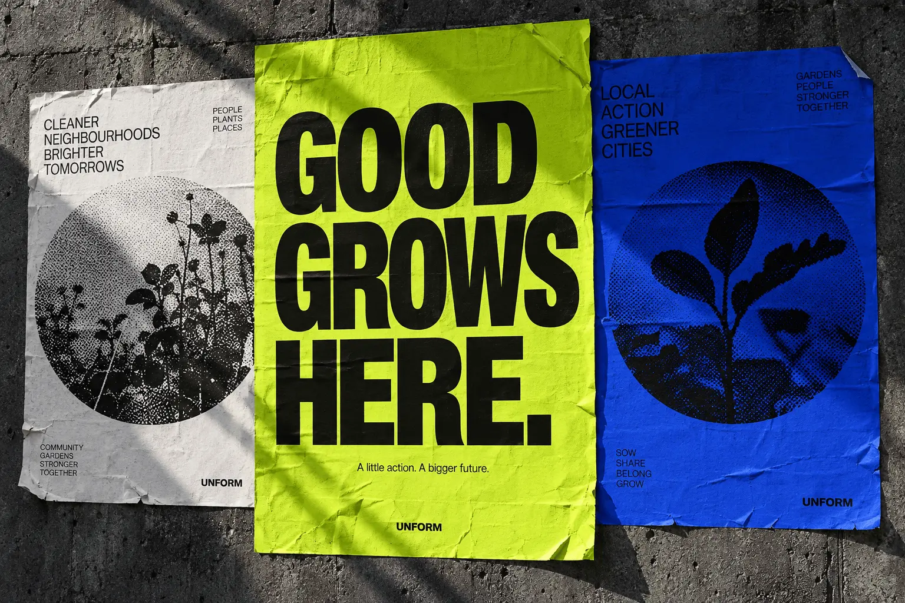

01
SELF-INITIATED / CAMPAIGN CONCEPT
Good grows here.
A little action. A bigger future. A campaign concept for greener, closer communities.
A selection of ideas made to help good causes get seen, heard and supported.
Explore the work
01A little action. A bigger future. A campaign concept for greener, closer communities.
Big typography creates an immediate invitation. Botanical halftones bring nature into an unmistakably graphic identity. A simple toolkit carries the idea from a street poster to a social post.